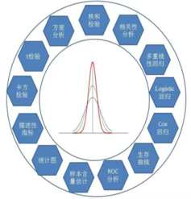
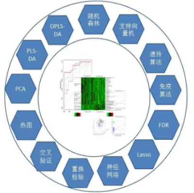

平台简介
随着信息化和高通量检测技术的快速发展，医学领域涌现出大量的复杂数据，其分析任务极为艰巨。DataAnalyst医学大数据和人工智能分析平台在此背景下应运而生，用最便捷的方式帮助研究者深入挖掘分析各种复杂数据。目前平台已上线基础统计分析模块和高维数据分析模块，供研究者可以免费使用。
DataAnalyst——免费、便捷式医学大数据和人工智能分析平台
| 最新动态 | 2021.08.01 DataAnalyst医学大数据分析平台正式发布 |
平台简介
随着信息化和高通量检测技术的快速发展，医学领域涌现出大量的复杂数据，其分析任务极为艰巨。DataAnalyst医学大数据和人工智能分析平台在此背景下应运而生，用最便捷的方式帮助研究者深入挖掘分析各种复杂数据。目前平台已上线基础统计分析模块和高维数据分析模块，供研究者可以免费使用。
主要分析方法

基础统计分析
DataAnalyst平台提供常见的基础统计分析，主要包括。。。
了解更多

高维数据分析
DataAnalyst数据分析平台目前提供常用的高维数据挖掘方法。。。
了解更多
苏州大学柯朝甫教授课题组
长期从事高维数据挖掘和医学统计方法研究。。。
了解更多
Email：
地址：
了解更多